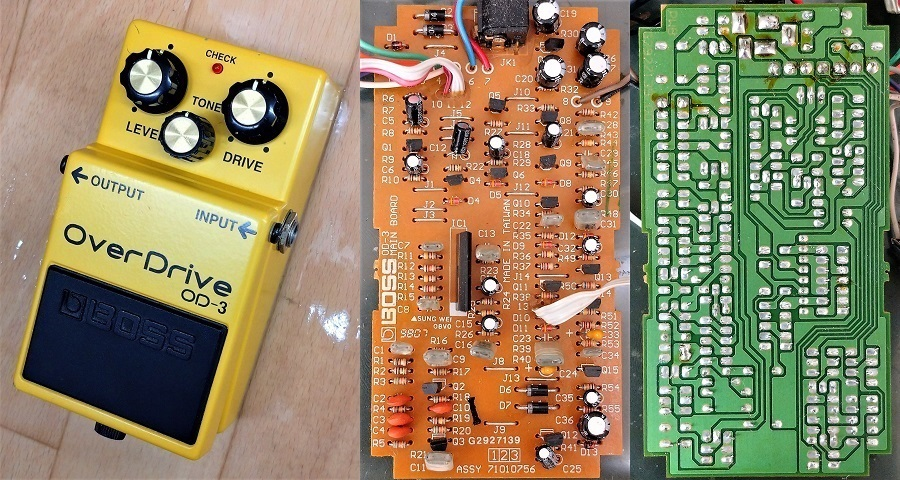
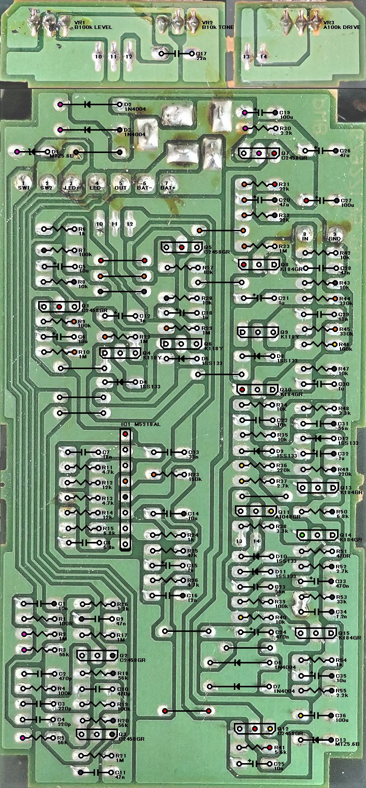
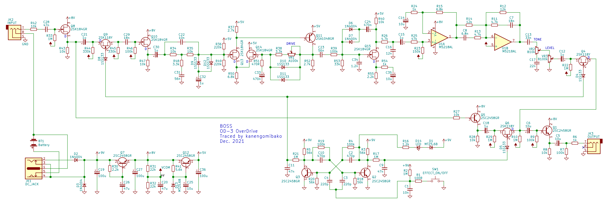
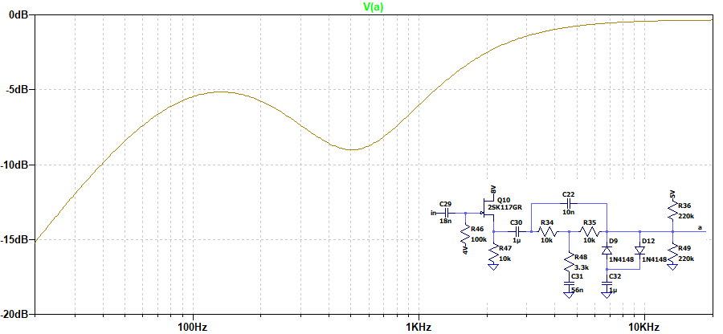
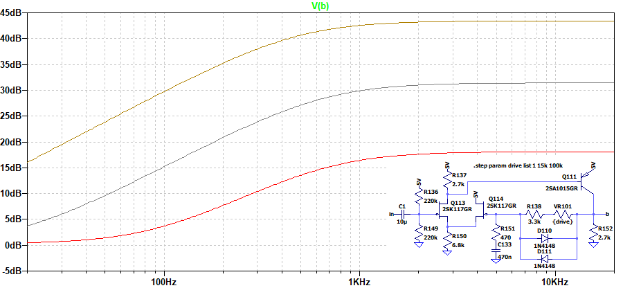
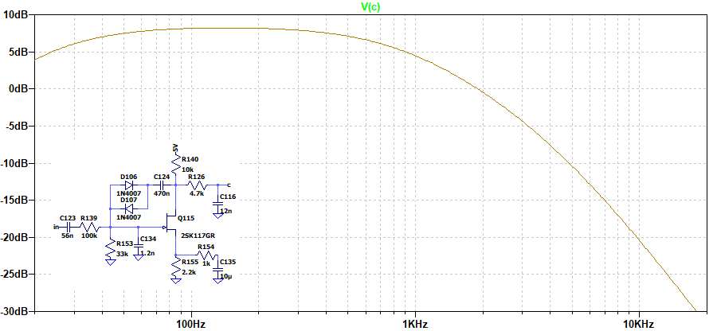
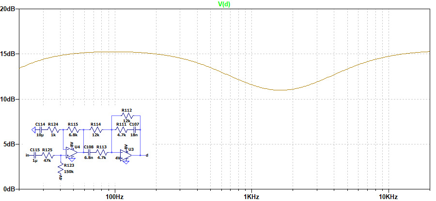
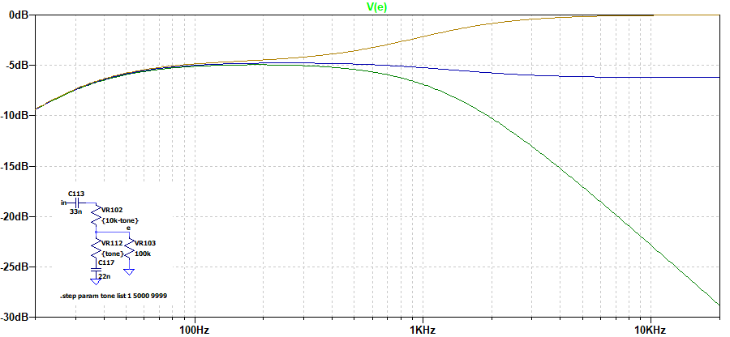
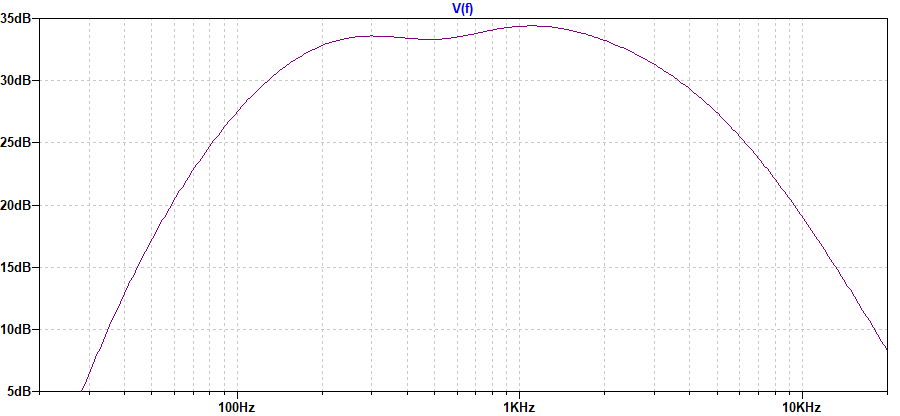

BOSS OD-3 OverDrive 解析
2021年12月31日 カテゴリー：修理・改造・解析

ジャンクで手に入れたBOSS OD-3（1998年製）ですが、残念ながら（？）ポットにガリがある程度で、問題なく音が出ました。基板を見てみると、出回っている回路図と違う部分が見受けられたので、トレースしてみることにしました。KiCadとLTspiceの回路図データはGitHubにあります。
▽基板画像

部品面から見た画像です。わざわざ部品の向きがそろうようにレイアウトされています。ツェナーダイオードは2つとも5.6Bという表記で、発売時期が近いTR-2と同じMTZ5.6Bと判断しました。他の汎用ダイオードもTR-2と同じと思われます。
▽回路図

出回っている回路図との主な違いは、Q11～Q15あたりが低い電圧（実測4.6V）で動作させてあるというところです。このページの記載ではさらに低い電圧（4.1V）でオペアンプはNJM4558LDとなっており、おそらく仕様変更が行われたと考えられます。
▽シミュレーション
それぞれのブロック毎の周波数特性を貼り付けておきます。





↓は上記全て通してのシミュレーションです（DRIVE50%、TONE50%）。

歪ませる前段階で500Hzあたりがカットしてあり、それが最終的にも表れています。この部分が音色を特徴づけるものとなっているのかもしれません。
※2SK184は2SK117のパッケージ違いのようです。2SK117と2SA1015のSpiceモデルはCQ出版社オンライン・サポート・サイトの「～モデルをLTSpiceに追加する」からダウンロードできます（会員登録が必要）。